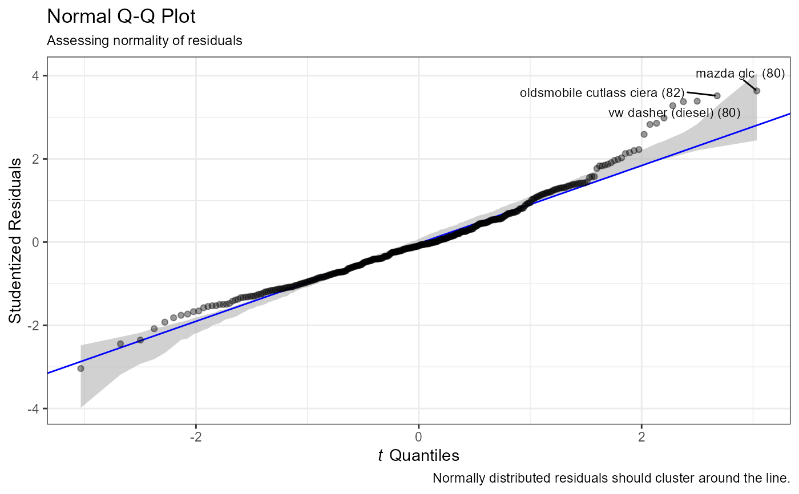
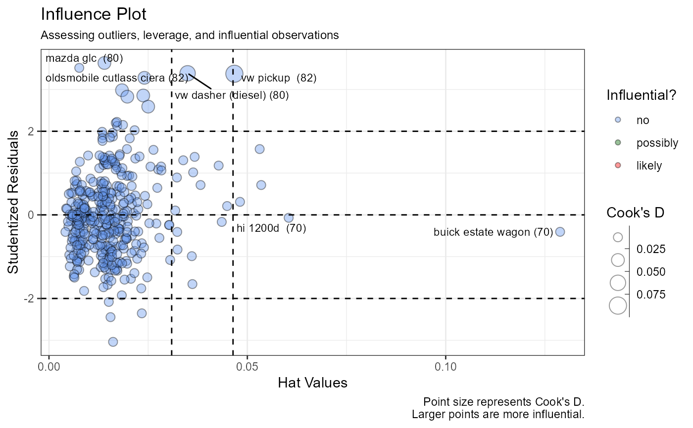
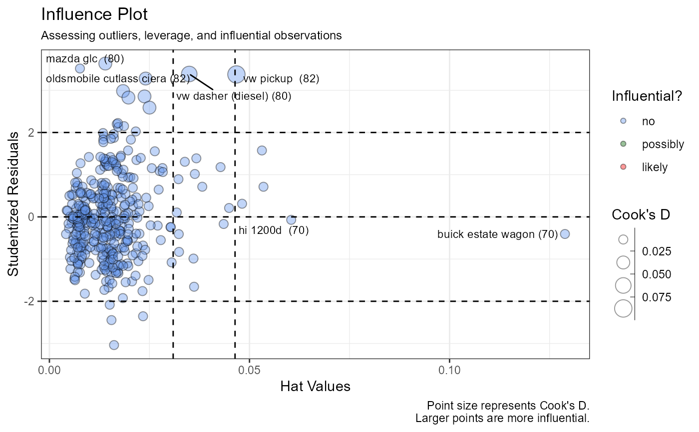

Diagnostics for Linear Models
diagnostics.lm.RdProvides diagnostics tests and graphs for a linear model
# S3 method for lm
diagnostics(x, alpha = 0.4, span = 0.8, ...)Arguments
- x
an object of class
c("lm")- alpha
numeric; transparency for plot points (default=0.4)
- span
numeric; smoothing parameter for loess fit lines (default=0.8)
- ...
not currently used
Value
a list containing the ggplot2 graphs and statistical tests
Details
The diagnostics function is a wrapper for several
diagnostic graphing functions and tests. The function evaluates
the following:
- Normality
Normality of the (studentized) residuals is assessed via a Q-Q plot (ggqqPlot), and Robust Jarque Bera Test (see notes).
- Linearity
Linearity of the explanatory-response relationship are assessed via Component + Residual (partial residual) plots (ggcrPlots). If there is a single predictor, a scatter plot with linear and loess lines is produced.
- Constant variance
Homoscedasticity is evaluated via a Spread-Level plot (ggspreadLevelPlot) and a Scores Test for Non-constant Error Variance. (ncvTest), If the test is significant, a transformation of the response variable to stabilize the variance is offered.
- Multicollinearity
Variance inflation factors (vif) are plotted. If there is a single predictor variable, this section is skipped.
- Outliers, leverage, and influence
An influence plot (gginfluencePlot) and Bonferroni Outlier Test (outlierTest) are provided.
Note
The Robust Jarque Bera Test is based on the test provided is
the DescTools package. See JarqueBeraTest
for details.
See also
Examples
mtcars$am <- factor(mtcars$am)
fit <- lm(mpg ~ wt + am + disp + hp, mtcars)
diagnostics(fit)
#> DIAGNOSTICS FOR MULTIPLE REGRESSION
#>
#> Normality
#> Robust Jarque Bera Test for Normality
#> Chi-square(2) = 3.2899, p < 0.193
#>
#> Homoscedasticity
#> Score Test of Non-Constant Error Variance
#> Null hypothesis: constant variance
#> Chi-square(1) = 2.1701 p < 0.1407
#>
#> Multicollinearity
#> wt am disp hp
#> 5.963704 2.386005 7.695157 3.381008
#>
#> Outliers
#> No Studentized residuals with Bonferroni p < 0.05
#> Largest |rstudent|:
#> rstudent unadjusted p-value Bonferroni p
#> Toyota Corolla 2.459787 0.020867 0.66773


 
